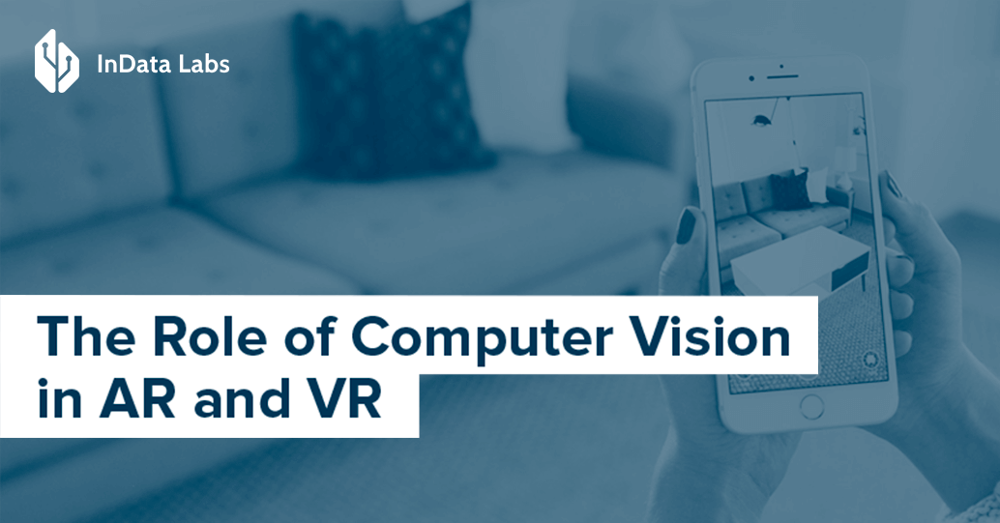
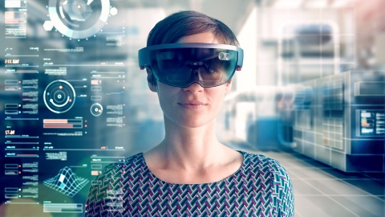

Virtual Reality (VR), the use of computer modeling and simulation that enables a person to interact with an artificial three-dimensional (3-D) visual or other sensory environment. In a typical VR format, a user wearing a helmet with a stereoscopic screen views animated images of a simulated environment.
Virtual Reality, or VR, is the use of computer technology to create a simulated environment which can be explored in 360 degrees. Unlike traditional interfaces, VR places the user inside the virtual environment to give an immersive experience

Computer vision (CV) for augmented reality enables computers to obtain, process, analyze and understand digital videos and images. When you look at photos, you see your face, while computer vision sees data. Machine learning, a method of data analysis, incorporated in an AR app soothes the pain of object detection.

Human-machine interface technology is used by almost all industrial organizations including energy, transportation, manufacturing and more. We are also developing mixed reality human-machine interfaces to control large swarms of autonomous robots.
stereoscopic display is one component that separates Virtual Reality from the majority of non-VR systems. Stereoscopic displays present a different view of the virtual scene to each eye, in the same way that stereo headphones play different sounds for each ear.